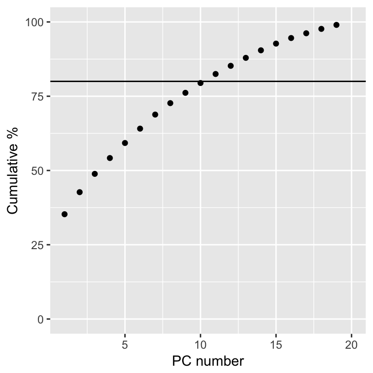
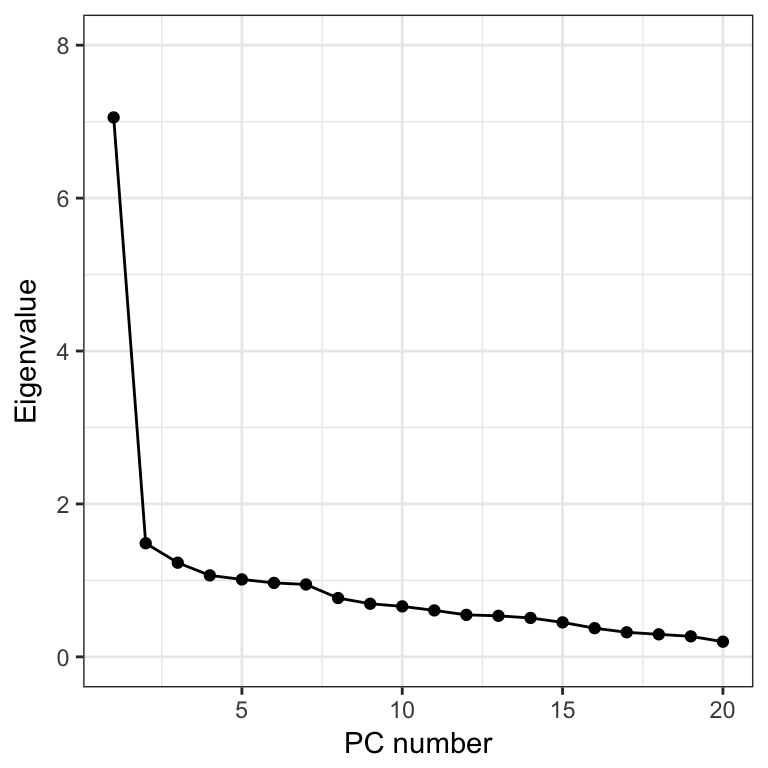
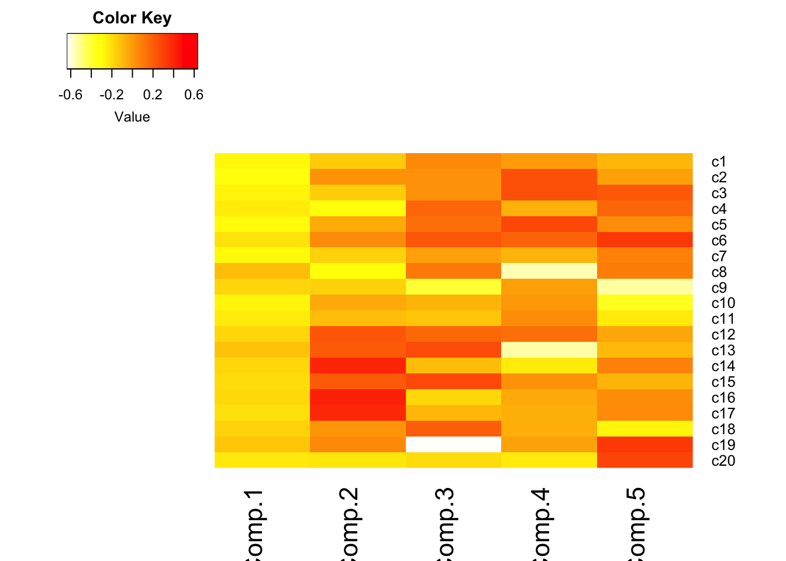

6.6 Example Analysis of depression
This example follows Analysis of depression data set section in PMA5 Section 14.5. This survey asks 20 questions on emotional states that relate to depression. Here I use PCA to reduce these 20 correlated variables down to a few uncorrelated variables that explain the most variance.
1. Read in the data and run princomp on the C1:C20 variables.
depress <- read.delim("https://norcalbiostat.netlify.com/data/depress_081217.txt", header=TRUE)
pc_dep <- princomp(depress[,9:28], cor=TRUE)
summary(pc_dep)
## Importance of components:
## Comp.1 Comp.2 Comp.3 Comp.4
## Standard deviation 2.6562036 1.21883931 1.10973409 1.03232021
## Proportion of Variance 0.3527709 0.07427846 0.06157549 0.05328425
## Cumulative Proportion 0.3527709 0.42704935 0.48862483 0.54190909
## Comp.5 Comp.6 Comp.7 Comp.8
## Standard deviation 1.00629648 0.98359581 0.97304489 0.87706188
## Proportion of Variance 0.05063163 0.04837304 0.04734082 0.03846188
## Cumulative Proportion 0.59254072 0.64091375 0.68825457 0.72671645
## Comp.9 Comp.10 Comp.11 Comp.12
## Standard deviation 0.83344885 0.81248191 0.77950975 0.74117295
## Proportion of Variance 0.03473185 0.03300634 0.03038177 0.02746687
## Cumulative Proportion 0.76144830 0.79445464 0.82483641 0.85230328
## Comp.13 Comp.14 Comp.15 Comp.16
## Standard deviation 0.73255278 0.71324438 0.67149280 0.61252016
## Proportion of Variance 0.02683168 0.02543588 0.02254513 0.01875905
## Cumulative Proportion 0.87913496 0.90457083 0.92711596 0.94587501
## Comp.17 Comp.18 Comp.19 Comp.20
## Standard deviation 0.56673129 0.54273638 0.51804873 0.445396635
## Proportion of Variance 0.01605922 0.01472814 0.01341872 0.009918908
## Cumulative Proportion 0.96193423 0.97666237 0.99008109 1.0000000002. Pick a subset of PC’s to work with
In the cumulative percentage plot below, I drew a horizontal line at 80%. So the first 9 PC’s explain around 75% of the total variance, and the first 10 can explain around 80%.
library(ggplot2)
qplot(x=1:20, y=cumsum((pc_dep$sdev)^2/20)*100, geom="point") +
xlab("PC number") + ylab("Cumulative %") + ylim(c(0,100)) +
geom_hline(aes(yintercept=80))
3. Create a Scree plot by plotting the eigenvalue against the PC number.
qplot(x=1:20, y=(pc_dep$sdev)^2, geom=c("point", "line")) +
xlab("PC number") + ylab("Eigenvalue") + ylim(c(0,8))
Option 1: Take all eigenvalues > 1 (\(m=5\)) Option 2: Use a cutoff point where the lines joining consecutive points are steep to the left of the cutoff point and flat right of the cutoff point. Point where the two slopes meet is the elbow. (\(m=2\)).
4. Examine the loadings
pc_dep$loadings[1:3,1:5]
## Comp.1 Comp.2 Comp.3 Comp.4 Comp.5
## c1 0.2774384 -0.14497938 0.05770239 -0.002723687 -0.08826773
## c2 0.3131829 0.02713557 0.03162990 0.247811083 -0.02439748
## c3 0.2677985 -0.15471968 0.03459037 0.247246879 0.21830547Here
- \(X_{1}\) = “I felt that I could not shake…”
- \(X_{2}\) = “I felt depressed…”
So the PC’s are calculated as
- $C_{1} = 0.277x_{1} + 0.313x_{2} + $
- $C_{2} = -0.1449x_{1} + 0.0271x_{2} + $
etc…
5. Interpret the PC’s
- Visualize the loadings using
heatmap.2()in thegplotspackage.- I reversed the colors so that red was high positive correlation and yellow/white is low.
- half the options I use below come from this SO post. I had no idea what they did, so I took what the solution showed, and played with it (added/changed some to see what they did), and reviewed
?heatmap.2to see what options were available.
library(gplots)
heatmap.2(pc_dep$loadings[,1:5], scale="none", Rowv=NA, Colv=NA, density.info="none",
dendrogram="none", trace="none", col=rev(heat.colors(256)))
- Loadings over 0.5 (red) help us interpret what these components could “mean”
- Must know exact wording of component questions
- \(C_{1}\): a weighted average of most items. High value indicates the respondent had many symptoms of depression. Note sign of loadings are all positive and all roughly the same color.
- Recall
- \(C_{2}\): lethargy (high energetic). High loading on c14, 16, 17, low on 4, 8, 20
- \(C_{3}\): friendliness of others. Large negative loading on c19, c9
etc.